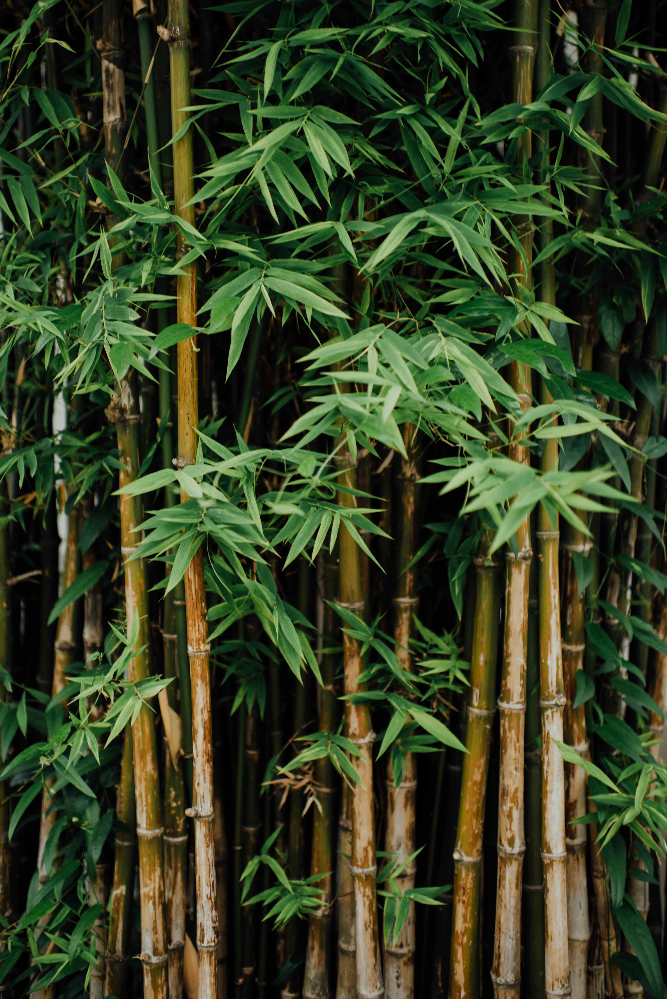

The red panda is largely herbivorous and feeds primarily on bamboo. It also feeds on fruits, blossoms, acorns, eggs, birds and small mammals. Bamboo leaves may be the most abundant food item year-round and the only food they can access during winter. The red panda grabs food with one of its front paws and usually eats sitting down or standing. When foraging for bamboo, it grabs the plant by the stem and pulls it down towards its jaws. It bites the leaves with the side of the cheek teeth and then shears, chews and swallows. Smaller food like blossoms, berries and small leaves are eaten differently, being clipped by the incisors.
